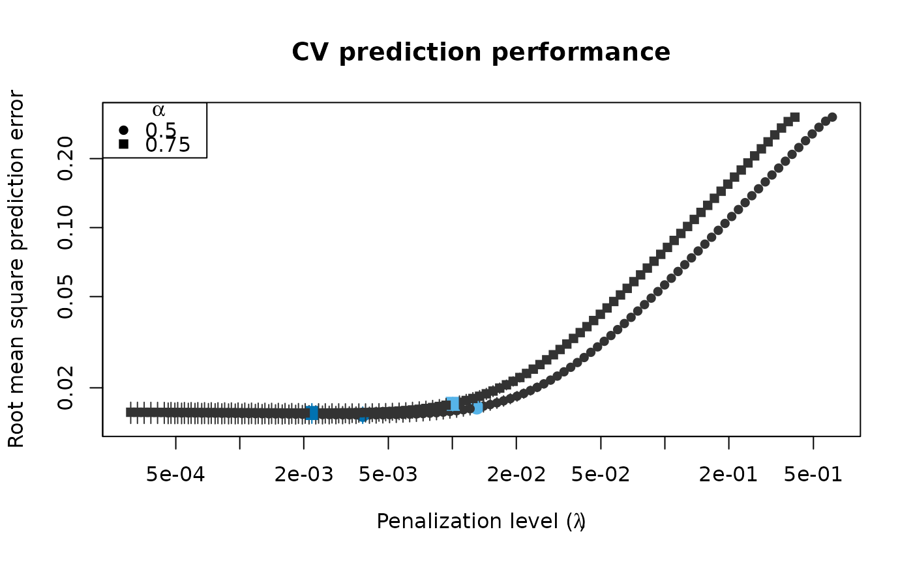
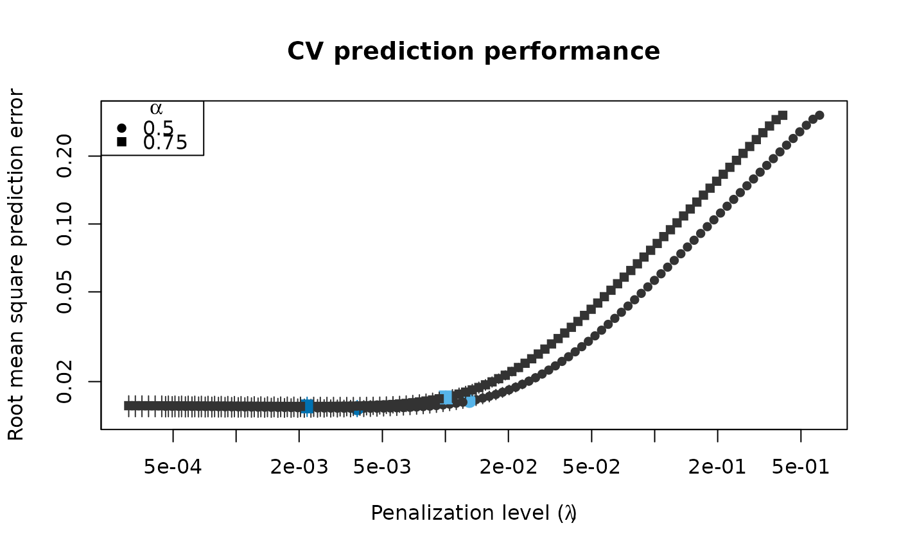

Perform (repeated) K-fold cross-validation for elnet().
Usage
elnet_cv(
x,
y,
lambda,
cv_k,
cv_repl = 1,
cv_type = "naive",
cv_metric = c("rmspe", "tau_size", "mape", "auroc"),
fit_all = TRUE,
cl = NULL,
...
)Arguments
- x
nbypmatrix of numeric predictors.- y
vector of response values of length
n. For binary classification,yshould be a factor with 2 levels.- lambda
optional user-supplied sequence of penalization levels. If given and not
NULL,nlambdaandlambda_min_ratioare ignored.- cv_k
number of folds per cross-validation.
- cv_repl
number of cross-validation replications.
- cv_type
what kind of cross-validation should be performed: robust information sharing (
ris) or standard (naive) CV.- cv_metric
only for
cv_type='naive'. Either a string specifying the performance metric to use, or a function to evaluate prediction errors in a single CV replication. If a function, the number of arguments define the data the function receives. If the function takes a single argument, it is called with a single numeric vector of prediction errors. If the function takes two or more arguments, it is called with the predicted values as first argument and the true values as second argument. The function must always return a single numeric value quantifying the prediction performance. The order of the given values corresponds to the order in the input data.- fit_all
only for
cv_type='naive'. IfTRUE, fit the model for all penalization levels. Can also be any combination of"min"and"{x}-se", in which case only models at the penalization level with smallest average CV accuracy, or within{x}standard errors, respectively. Settingfit_alltoFALSEis equivalent to"min". Applies to allalphavalue.- cl
a parallel cluster. Can only be used in combination with
ncores = 1.- ...
Arguments passed on to
elnetalphaelastic net penalty mixing parameter with \(0 \le \alpha \le 1\).
alpha = 1is the LASSO penalty, andalpha = 0the Ridge penalty. Can be a vector of several values, butalpha = 0cannot be mixed with other values.nlambdanumber of penalization levels.
lambda_min_ratioSmallest value of the penalization level as a fraction of the largest level (i.e., the smallest value for which all coefficients are zero). The default depends on the sample size relative to the number of variables and
alpha. If more observations than variables are available, the default is1e-3 * alpha, otherwise1e-2 * alpha.penalty_loadingsa vector of positive penalty loadings (a.k.a. weights) for different penalization of each coefficient.
standardizestandardize variables to have unit variance. Coefficients are always returned in original scale.
weightsa vector of positive observation weights.
interceptinclude an intercept in the model.
sparseuse sparse coefficient vectors.
en_algorithm_optsoptions for the EN algorithm. See en_algorithm_options for details.
epsnumerical tolerance.
Value
a list-like object with the same components as returned by elnet(),
plus the following:
cvresdata frame of average cross-validated performance.
Details
The built-in CV metrics are
"tau_size"\(\tau\)-size of the prediction error, computed by
tau_size()(default)."mape"Median absolute prediction error.
"rmspe"Root mean squared prediction error.
"auroc"Area under the receiver operator characteristic curve (actually 1 - AUROC). Only sensible for binary responses.
See also
elnet() for computing the LS-EN regularization path without cross-validation.
pense_cv() for cross-validation of S-estimates of regression with elastic net penalty.
coef.pense_cvfit() for extracting coefficient estimates.
plot.pense_cvfit() for plotting the CV performance or the regularization path.
Other functions for computing non-robust estimates:
elnet()
Examples
# Compute the LS-EN regularization path for Freeny's revenue data
# (see ?freeny)
data(freeny)
x <- as.matrix(freeny[ , 2:5])
regpath <- elnet(x, freeny$y, alpha = c(0.5, 0.75))
plot(regpath)
 plot(regpath, alpha = 0.75)
plot(regpath, alpha = 0.75)
 # Extract the coefficients at a certain penalization level
coef(regpath, lambda = regpath$lambda[[1]][[5]],
alpha = 0.75)
#> (Intercept) lag.quarterly.revenue price.index
#> 9.306304 0.000000 0.000000
#> income.level market.potential
#> 0.000000 0.000000
# What penalization level leads to good prediction performance?
set.seed(123)
cv_results <- elnet_cv(x, freeny$y, alpha = c(0.5, 0.75),
cv_repl = 10, cv_k = 4,
cv_measure = "tau")
plot(cv_results, se_mult = 1.5)

plot(cv_results, se_mult = 1.5, what = "coef.path")
# Extract the coefficients at a certain penalization level
coef(regpath, lambda = regpath$lambda[[1]][[5]],
alpha = 0.75)
#> (Intercept) lag.quarterly.revenue price.index
#> 9.306304 0.000000 0.000000
#> income.level market.potential
#> 0.000000 0.000000
# What penalization level leads to good prediction performance?
set.seed(123)
cv_results <- elnet_cv(x, freeny$y, alpha = c(0.5, 0.75),
cv_repl = 10, cv_k = 4,
cv_measure = "tau")
plot(cv_results, se_mult = 1.5)

plot(cv_results, se_mult = 1.5, what = "coef.path")
 # Extract the coefficients at the penalization level with
# smallest prediction error ...
summary(cv_results)
#> EN fit with prediction performance estimated by replications of 4-fold
#> cross-validation.
#>
#> 4 out of 4 predictors have non-zero coefficients:
#>
#> Estimate
#> (Intercept) -9.6491805
#> X1 0.1899399
#> X2 -0.6858733
#> X3 0.7075924
#> X4 1.2247539
#> ---
#>
#> Hyper-parameters: lambda=0.003787891, alpha=0.5
coef(cv_results)
#> (Intercept) lag.quarterly.revenue price.index
#> -9.6491805 0.1899399 -0.6858733
#> income.level market.potential
#> 0.7075924 1.2247539
# ... or at the penalization level with prediction error
# statistically indistinguishable from the minimum.
summary(cv_results, lambda = "1.5-se")
#> EN fit with prediction performance estimated by replications of 4-fold
#> cross-validation.
#>
#> 4 out of 4 predictors have non-zero coefficients:
#>
#> Estimate
#> (Intercept) -9.5875726
#> X1 0.2270959
#> X2 -0.6216322
#> X3 0.6519060
#> X4 1.1972788
#> ---
#>
#> Hyper-parameters: lambda=0.01303176, alpha=0.5
coef(cv_results, lambda = "1.5-se")
#> (Intercept) lag.quarterly.revenue price.index
#> -9.5875726 0.2270959 -0.6216322
#> income.level market.potential
#> 0.6519060 1.1972788
# Extract the coefficients at the penalization level with
# smallest prediction error ...
summary(cv_results)
#> EN fit with prediction performance estimated by replications of 4-fold
#> cross-validation.
#>
#> 4 out of 4 predictors have non-zero coefficients:
#>
#> Estimate
#> (Intercept) -9.6491805
#> X1 0.1899399
#> X2 -0.6858733
#> X3 0.7075924
#> X4 1.2247539
#> ---
#>
#> Hyper-parameters: lambda=0.003787891, alpha=0.5
coef(cv_results)
#> (Intercept) lag.quarterly.revenue price.index
#> -9.6491805 0.1899399 -0.6858733
#> income.level market.potential
#> 0.7075924 1.2247539
# ... or at the penalization level with prediction error
# statistically indistinguishable from the minimum.
summary(cv_results, lambda = "1.5-se")
#> EN fit with prediction performance estimated by replications of 4-fold
#> cross-validation.
#>
#> 4 out of 4 predictors have non-zero coefficients:
#>
#> Estimate
#> (Intercept) -9.5875726
#> X1 0.2270959
#> X2 -0.6216322
#> X3 0.6519060
#> X4 1.1972788
#> ---
#>
#> Hyper-parameters: lambda=0.01303176, alpha=0.5
coef(cv_results, lambda = "1.5-se")
#> (Intercept) lag.quarterly.revenue price.index
#> -9.5875726 0.2270959 -0.6216322
#> income.level market.potential
#> 0.6519060 1.1972788